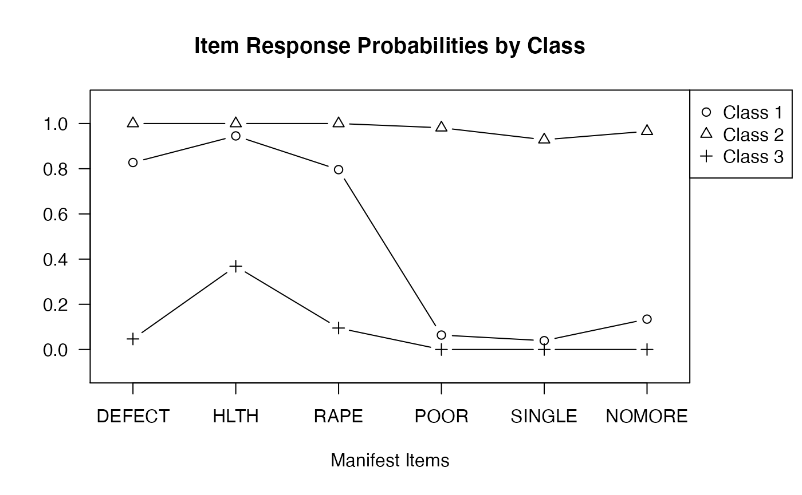
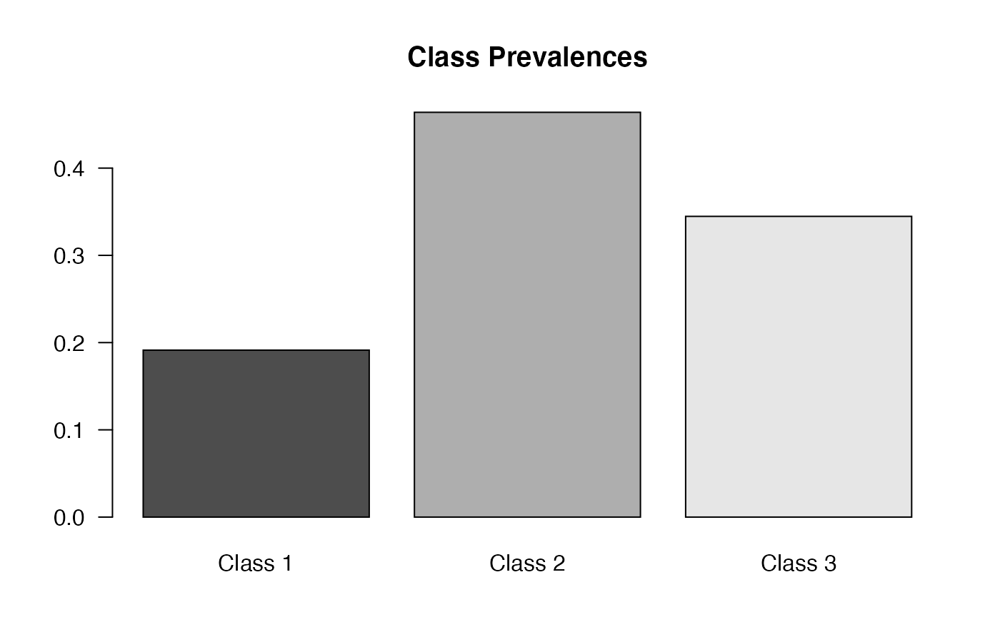
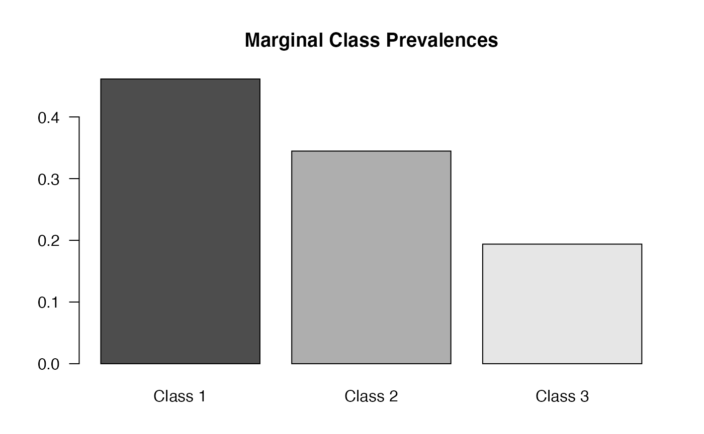
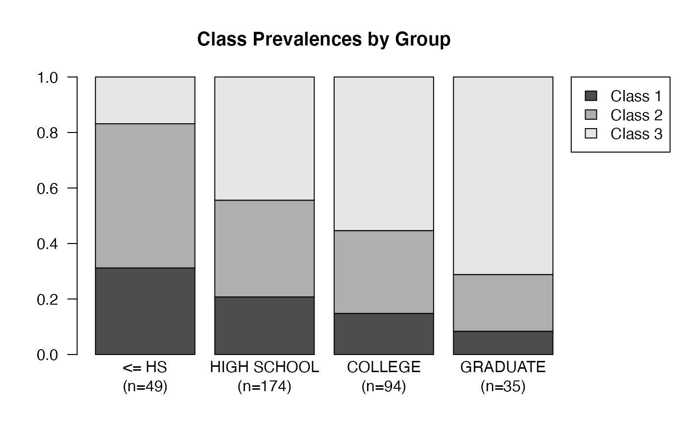
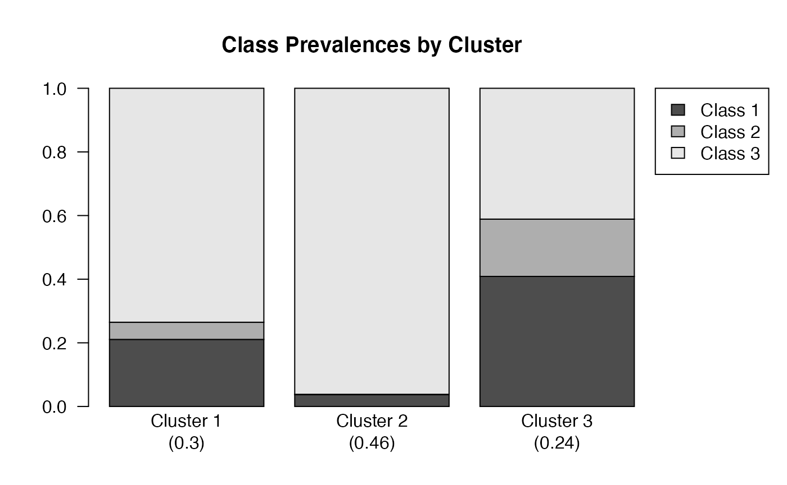
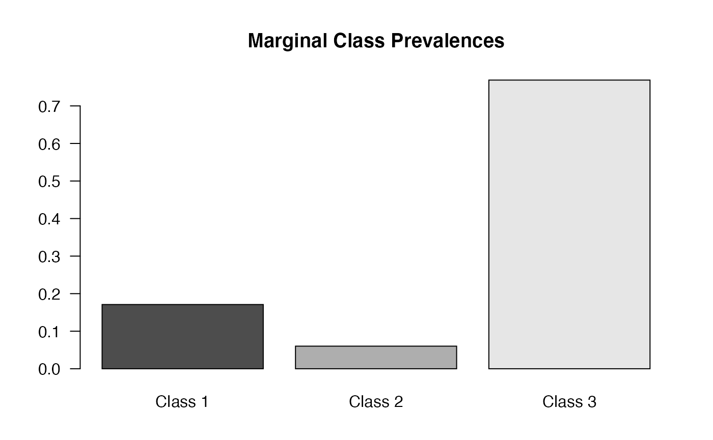
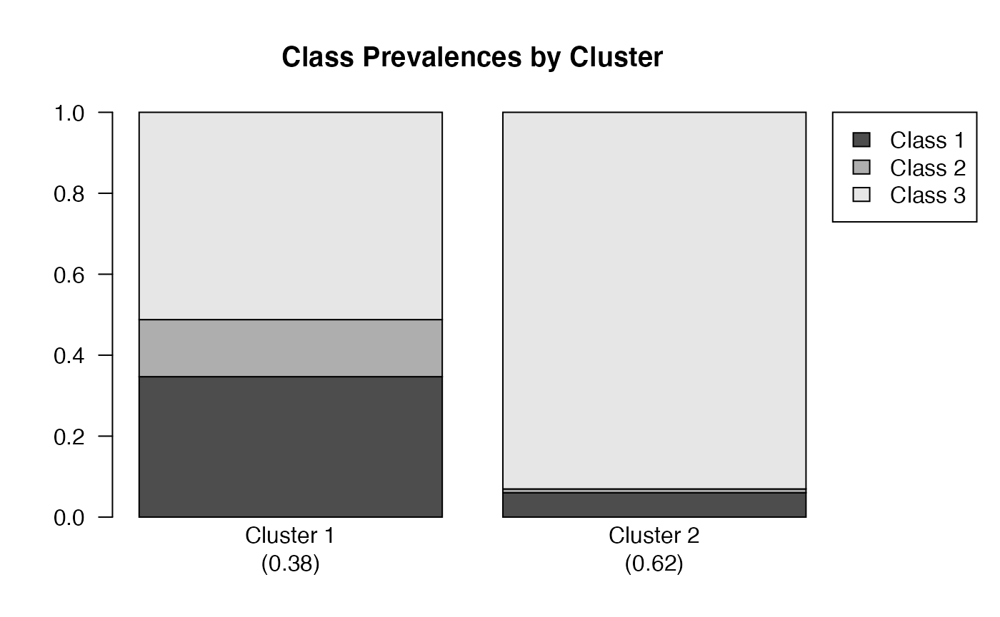

The dataset gss08 taken from the 2008 General Social Survey (Smith et al., 2010) includes six binary manifest items measuring 355 respondents’ attitudes toward abortion following the strategy suggested by McCutcheon, 1987. For each item, respondents were asked whether abortion should be legalized under various circumstances: a strong chance of serious defect in the baby (DEFECT), pregnancy is seriously endangering the woman’s health (HLTH), pregnancy as a result of rape (RAPE), due to low income, the family cannot afford any more children (POOR), woman is unmarried and has no plans to marry the man (SINGLE), and woman is married but does not want more children (NOMORE). Each item has two possible levels of response (i.e., “YES” or “NO”). gss08 also include five covariates: AGE, GENDER, RACE, DEGREE and REGION of respondents.
data("gss08")
str(gss08)
#> 'data.frame': 355 obs. of 11 variables:
#> $ DEFECT: Factor w/ 2 levels "YES","NO": 1 2 2 1 1 1 1 1 1 1 ...
#> $ HLTH : Factor w/ 2 levels "YES","NO": 1 2 2 1 1 1 1 1 1 1 ...
#> $ RAPE : Factor w/ 2 levels "YES","NO": 1 2 2 1 1 1 1 1 1 1 ...
#> $ POOR : Factor w/ 2 levels "YES","NO": 2 2 2 1 1 1 1 1 1 1 ...
#> $ SINGLE: Factor w/ 2 levels "YES","NO": 2 2 2 1 1 1 1 1 NA 1 ...
#> $ NOMORE: Factor w/ 2 levels "YES","NO": 1 2 2 1 1 1 1 NA 1 1 ...
#> $ AGE : num 32 21 56 40 62 71 58 36 52 78 ...
#> $ SEX : Factor w/ 2 levels "MALE","FEMALE": 1 2 2 1 2 1 2 1 1 2 ...
#> $ RACE : Factor w/ 3 levels "WHITE","BLACK",..: 2 2 2 2 1 2 2 1 1 1 ...
#> $ DEGREE: Factor w/ 4 levels "<= HS","HIGH SCHOOL",..: 2 2 1 4 3 2 3 3 2 3 ...
#> $ REGION: Factor w/ 9 levels "NEW ENGLAND",..: 2 2 2 2 2 2 2 2 2 2 ...
lca2 = glca(item(DEFECT, HLTH, RAPE, POOR, SINGLE, NOMORE) ~ 1,
data = gss08, nclass = 2)
#> Manifest items :
#> DEFECT HLTH RAPE POOR SINGLE NOMORE
#>
#> Deleted observation(s) :
#> 3 observation(s) for missing all manifest items
#> 0 observation(s) for missing at least 1 covariates
#>
#> SET : 1 ..loglik : -740.1018
#> SET : 2 ....loglik : -740.1018
#> SET : 3 ....loglik : -740.1018
#> SET : 4 ..loglik : -740.1018
#> SET : 5 ...loglik : -740.1018
#> SET : 6 .....loglik : -740.6852
#> SET : 7 ....loglik : -740.1018
#> SET : 8 .loglik : -740.1018
#> SET : 9 ...loglik : -740.1018
#> SET : 10 ..loglik : -740.1018
#>
#> Start with SET 1 (-740.1018)
#>
#> Standard latent class analysis Fitting...
#>
#> 27 iteration
#>
#> Converged at 27 iteration (loglik :-740.1018)
lca3 = glca(item(DEFECT, HLTH, RAPE, POOR, SINGLE, NOMORE) ~ 1,
data = gss08, nclass = 3)
#> Manifest items :
#> DEFECT HLTH RAPE POOR SINGLE NOMORE
#>
#> Deleted observation(s) :
#> 3 observation(s) for missing all manifest items
#> 0 observation(s) for missing at least 1 covariates
#>
#> SET : 1 .....loglik : -687.4486
#> SET : 2 .....loglik : -687.4514
#> SET : 3 .....loglik : -687.4723
#> SET : 4 .....loglik : -687.4486
#> SET : 5 .....loglik : -687.4486
#> SET : 6 .....loglik : -687.4486
#> SET : 7 .....loglik : -687.4486
#> SET : 8 ...loglik : -687.4486
#> SET : 9 .....loglik : -687.4486
#> SET : 10 .....loglik : -687.4486
#>
#> Start with SET 8 (-687.4486)
#>
#> Standard latent class analysis Fitting...
#>
#> 36 iteration
#>
#> Converged at 36 iteration (loglik :-687.4486)
lca4 = glca(item(DEFECT, HLTH, RAPE, POOR, SINGLE, NOMORE) ~ 1,
data = gss08, nclass = 4)
#> Manifest items :
#> DEFECT HLTH RAPE POOR SINGLE NOMORE
#>
#> Deleted observation(s) :
#> 3 observation(s) for missing all manifest items
#> 0 observation(s) for missing at least 1 covariates
#>
#> SET : 1 .....loglik : -685.6
#> SET : 2 .....loglik : -685.379
#> SET : 3 .....loglik : -687.1817
#> SET : 4 .....loglik : -687.023
#> SET : 5 .....loglik : -687.4026
#> SET : 6 .....loglik : -685.0221
#> SET : 7 .....loglik : -685.4564
#> SET : 8 .....loglik : -684.2362
#> SET : 9 .....loglik : -684.3008
#> SET : 10 .....loglik : -687.1667
#>
#> Start with SET 8 (-684.2362)
#>
#> Standard latent class analysis Fitting...
#>
#> .. 250 iteration
#>
#> Converged at 250 iteration (loglik :-684.1895)
gofglca(lca2, lca3, lca4, test = "boot")
#> Model 1: item(DEFECT, HLTH, RAPE, POOR, SINGLE, NOMORE) ~ 1
#> nclass: 2
#> Model 2: item(DEFECT, HLTH, RAPE, POOR, SINGLE, NOMORE) ~ 1
#> nclass: 3
#> Model 3: item(DEFECT, HLTH, RAPE, POOR, SINGLE, NOMORE) ~ 1
#> nclass: 4
#>
#> Goodness of Fit Table :
#> logLik AIC CAIC BIC entropy Res.Df Gsq Boot p-value
#> 1 -740.10 1506.20 1569.43 1556.43 0.95 50 135.13 0.00
#> 2 -687.45 1414.90 1512.17 1492.17 0.88 43 29.83 0.54
#> 3 -684.19 1422.38 1553.70 1526.70 0.79 36 23.31 0.46
#>
#> Analysis of Deviance Table :
#> npar logLik Df Deviance Boot p-value
#> 1 13 -740.10
#> 2 20 -687.45 7 105.31 0.0
#> 3 27 -684.19 7 6.52 0.3
summary(lca3)
#>
#> Call:
#> glca(formula = item(DEFECT, HLTH, RAPE, POOR, SINGLE, NOMORE) ~
#> 1, data = gss08, nclass = 3)
#>
#> Manifest items : DEFECT HLTH RAPE POOR SINGLE NOMORE
#>
#> Categories for manifest items :
#> Y = 1 Y = 2
#> DEFECT YES NO
#> HLTH YES NO
#> RAPE YES NO
#> POOR YES NO
#> SINGLE YES NO
#> NOMORE YES NO
#>
#> Model : Standard latent class analysis
#>
#> Number of latent classes : 3
#> Number of observations : 352
#> Number of parameters : 20
#>
#> log-likelihood : -687.4486
#> G-squared : 29.82695
#> AIC : 1414.897
#> BIC : 1492.17
#>
#> Marginal prevalences for latent classes :
#> Class 1 Class 2 Class 3
#> 0.19138 0.46396 0.34467
#>
#> Class prevalences by group :
#> Class 1 Class 2 Class 3
#> ALL 0.19138 0.46396 0.34467
#>
#> Rho (Y = 1) :
#> DEFECT HLTH RAPE POOR SINGLE NOMORE
#> Class 1 0.0466 0.3684 0.0949 0.0000 0.0000 0.0000
#> Class 2 1.0000 1.0000 1.0000 0.9813 0.9284 0.9657
#> Class 3 0.8275 0.9453 0.7960 0.0638 0.0390 0.1344
#>
#> Rho (Y = 2) :
#> DEFECT HLTH RAPE POOR SINGLE NOMORE
#> Class 1 0.9534 0.6316 0.9051 1.0000 1.0000 1.0000
#> Class 2 0.0000 0.0000 0.0000 0.0187 0.0716 0.0343
#> Class 3 0.1725 0.0547 0.2040 0.9362 0.9610 0.8656
plot(lca3)
## Multiple-group LCA (MGLCA)
mglca = glca(item(DEFECT, HLTH, RAPE, POOR, SINGLE, NOMORE) ~ 1,
group = DEGREE, data = gss08, nclass = 3)
#> Manifest items :
#> DEFECT HLTH RAPE POOR SINGLE NOMORE
#> Grouping variable : DEGREE
#>
#> Deleted observation(s) :
#> 3 observation(s) for missing all manifest items
#> 0 observation(s) for missing at least 1 covariates
#>
#> SET : 1 .....loglik : -672.4138
#> SET : 2 .....loglik : -672.4139
#> SET : 3 .....loglik : -672.4369
#> SET : 4 .....loglik : -672.4188
#> SET : 5 .....loglik : -672.4434
#> SET : 6 .....loglik : -680.9979
#> SET : 7 .....loglik : -676.3935
#> SET : 8 .....loglik : -672.4368
#> SET : 9 .....loglik : -672.4141
#> SET : 10 .....loglik : -672.4157
#>
#> Start with SET 1 (-672.4138)
#>
#> Multiple-group latent class analysis Fitting...
#>
#> 67 iteration
#>
#> Converged at 67 iteration (loglik :-672.4138)
plot(mglca)
## Multiple-group LCA with covariate(s) (MGLCR)
mglcr1 = glca(item(DEFECT, HLTH, RAPE, POOR, SINGLE, NOMORE) ~ SEX,
group = DEGREE, data = gss08, nclass = 3)
#> Manifest items :
#> DEFECT HLTH RAPE POOR SINGLE NOMORE
#> Grouping variable : DEGREE
#> Covariates (Level 1) :
#> SEX
#>
#> Deleted observation(s) :
#> 3 observation(s) for missing all manifest items
#> 0 observation(s) for missing at least 1 covariates
#>
#> SET : 1 .....loglik : -666.7128
#> SET : 2 .....loglik : -669.7899
#> SET : 3 .....loglik : -666.7104
#> SET : 4 .....loglik : -677.664
#> SET : 5 .....loglik : -666.7097
#> SET : 6 .....loglik : -666.7102
#> SET : 7 .....loglik : -666.7104
#> SET : 8 .....loglik : -666.7097
#> SET : 9 .....loglik : -666.7097
#> SET : 10 .....loglik : -666.7099
#>
#> Start with SET 9 (-666.7097)
#>
#> Multiple-group latent class analysis Fitting...
#>
#> 72 iteration
#>
#> Converged at 72 iteration (loglik :-666.7097)
mglcr2 = glca(item(DEFECT, HLTH, RAPE, POOR, SINGLE, NOMORE) ~ SEX,
group = DEGREE, data = gss08, nclass = 3, coeff.inv = FALSE)
#> Manifest items :
#> DEFECT HLTH RAPE POOR SINGLE NOMORE
#> Grouping variable : DEGREE
#> Covariates (Level 1) :
#> SEX
#>
#> Deleted observation(s) :
#> 3 observation(s) for missing all manifest items
#> 0 observation(s) for missing at least 1 covariates
#>
#> SET : 1 .....loglik : -662.0445
#> SET : 2 .....loglik : -662.0445
#> SET : 3 .....loglik : -662.0445
#> SET : 4 .....loglik : -673.1904
#> SET : 5 .....loglik : -662.0444
#> SET : 6 .....loglik : -665.461
#> SET : 7 .....loglik : -662.0446
#> SET : 8 .....loglik : -662.0707
#> SET : 9 .....loglik : -662.0444
#> SET : 10 .....loglik : -662.4523
#>
#> Start with SET 5 (-662.0444)
#>
#> Multiple-group latent class analysis Fitting...
#>
#> 65 iteration
#>
#> Converged at 65 iteration (loglik :-662.0444)
gofglca(mglca, mglcr1, mglcr2, test = "chisq")
#> Model 1: item(DEFECT, HLTH, RAPE, POOR, SINGLE, NOMORE) ~ 1
#> Group: DEGREE, nclass: 3, Meas.inv: TRUE
#> Model 2: item(DEFECT, HLTH, RAPE, POOR, SINGLE, NOMORE) ~ SEX
#> Group: DEGREE, nclass: 3, Meas.inv: TRUE, Coef.inv: TRUE
#> Model 3: item(DEFECT, HLTH, RAPE, POOR, SINGLE, NOMORE) ~ SEX
#> Group: DEGREE, nclass: 3, Meas.inv: TRUE, Coef.inv: FALSE
#>
#> Goodness of Fit Table :
#> logLik AIC CAIC BIC entropy Res.Df Gsq
#> 1 -672.41 1396.83 1523.28 1497.28 0.88 229 87.85
#> 2 -666.71 1389.42 1525.60 1497.60 0.88 323 149.97
#> 3 -662.04 1392.09 1557.45 1523.45 0.88 317 140.64
#>
#> Analysis of Deviance Table :
#> npar logLik Df Deviance Pr(>Chi)
#> 1 26 -672.41
#> 2 28 -666.71 2 11.41 0.00
#> 3 34 -662.04 6 9.33 0.16
coef(mglcr1)
#> Coefficients :
#>
#> Class 1 / 3 :
#> Odds Ratio Coefficient Std. Error t value Pr(>|t|)
#> SEXFEMALE 0.32824 -1.11400 0.09062 -12.29 <2e-16 ***
#> ---
#> Signif. codes: 0 '***' 0.001 '**' 0.01 '*' 0.05 '.' 0.1 ' ' 1
#>
#> Class 2 / 3 :
#> Odds Ratio Coefficient Std. Error t value Pr(>|t|)
#> SEXFEMALE 0.35678 -1.03064 0.09971 -10.34 <2e-16 ***
#> ---
#> Signif. codes: 0 '***' 0.001 '**' 0.01 '*' 0.05 '.' 0.1 ' ' 1The dataset nyts18 comprises five dichotomized manifest items on the life-time experience of several types of tobacco including cigarettes (ECIGT), cigars (ECIGAR), chewing tobacco/snuff/or dip (ESLT), electronic cigarettes (EELCIGT), and hookah or water pipe (EHOOKAH) taken from the National Youth Tobacco Survey 2018 (NYTS 2018, https://www.cdc.gov/tobacco/data_statistics/surveys/nyts). The sample considered in this study includes 1,743 non-Hispanic white students from 45 schools. The number of sampled students from each school is in the range of 30 to 50. The school membership can be identified by SCH_ID and each school is classified as either middle or high school (SCH_LEV).
data("nyts18")
str(nyts18)
#> 'data.frame': 1734 obs. of 8 variables:
#> $ ECIGT : Factor w/ 2 levels "Yes","No": 2 2 2 2 2 2 2 2 2 2 ...
#> $ ECIGAR : Factor w/ 2 levels "Yes","No": 2 1 2 2 2 1 2 2 2 2 ...
#> $ ESLT : Factor w/ 2 levels "Yes","No": 2 2 2 2 2 2 2 2 2 2 ...
#> $ EELCIGT: Factor w/ 2 levels "Yes","No": 2 1 2 2 2 1 2 2 2 2 ...
#> $ EHOOKAH: Factor w/ 2 levels "Yes","No": 2 2 2 2 2 2 2 2 2 2 ...
#> $ SEX : Factor w/ 2 levels "Male","Female": 2 1 1 1 1 2 1 2 1 2 ...
#> $ SCH_ID : Factor w/ 45 levels "d3c3dc","12d5ad",..: 11 11 11 11 11 11 11 11 11 11 ...
#> $ SCH_LEV: Factor w/ 2 levels "High School",..: 1 1 1 1 1 1 1 1 1 1 ...
## Multilevel LCA (MLCA)
mlca2 = glca(item(ECIGT, ECIGAR, ESLT, EELCIGT, EHOOKAH) ~ 1, group = SCH_ID,
data = nyts18, nclass = 3, ncluster = 2)
#> Manifest items :
#> ECIGT ECIGAR ESLT EELCIGT EHOOKAH
#> Grouping variable : SCH_ID
#>
#> Deleted observation(s) :
#> 0 observation(s) for missing all manifest items
#> 0 observation(s) for missing at least 1 covariates
#>
#> SET : 1 .....loglik : -1956.444
#> SET : 2 .....loglik : -1955.49
#> SET : 3 .....loglik : -1958.1
#> SET : 4 .....loglik : -1968.764
#> SET : 5 .....loglik : -1975.406
#> SET : 6 .....loglik : -1955.488
#> SET : 7 .....loglik : -1961.303
#> SET : 8 .....loglik : -1980.761
#> SET : 9 .....loglik : -1955.503
#> SET : 10 .....loglik : -1960.374
#>
#> Start with SET 6 (-1955.488)
#>
#> Nonparametric multilevel latent class analysis Fitting...
#>
#> . 102 iteration
#>
#> Converged at 102 iteration (loglik :-1955.487)
mlca3 = glca(item(ECIGT, ECIGAR, ESLT, EELCIGT, EHOOKAH) ~ 1, group = SCH_ID,
data = nyts18, nclass = 3, ncluster = 3)
#> Manifest items :
#> ECIGT ECIGAR ESLT EELCIGT EHOOKAH
#> Grouping variable : SCH_ID
#>
#> Deleted observation(s) :
#> 0 observation(s) for missing all manifest items
#> 0 observation(s) for missing at least 1 covariates
#>
#> SET : 1 .....loglik : -1953.371
#> SET : 2 .....loglik : -1939.774
#> SET : 3 .....loglik : -1938.774
#> SET : 4 .....loglik : -1947.684
#> SET : 5 .....loglik : -1973.727
#> SET : 6 .....loglik : -1938.773
#> SET : 7 .....loglik : -1938.773
#> SET : 8 .....loglik : -1940.134
#> SET : 9 .....loglik : -1938.784
#> SET : 10 .....loglik : -1938.796
#>
#> Start with SET 6 (-1938.773)
#>
#> Nonparametric multilevel latent class analysis Fitting...
#>
#> . 133 iteration
#>
#> Converged at 133 iteration (loglik :-1938.731)
mlca4 = glca(item(ECIGT, ECIGAR, ESLT, EELCIGT, EHOOKAH) ~ 1, group = SCH_ID,
data = nyts18, nclass = 3, ncluster = 4)
#> Manifest items :
#> ECIGT ECIGAR ESLT EELCIGT EHOOKAH
#> Grouping variable : SCH_ID
#>
#> Deleted observation(s) :
#> 0 observation(s) for missing all manifest items
#> 0 observation(s) for missing at least 1 covariates
#>
#> SET : 1 .....loglik : -1939.399
#> SET : 2 .....loglik : -1944.082
#> SET : 3 .....loglik : -1962.635
#> SET : 4 .....loglik : -1941.152
#> SET : 5 .....loglik : -1940.113
#> SET : 6 .....loglik : -1960.983
#> SET : 7 .....loglik : -1938.776
#> SET : 8 .....loglik : -1938.81
#> SET : 9 .....loglik : -1938.419
#> SET : 10 .....loglik : -1938.737
#>
#> Start with SET 9 (-1938.419)
#>
#> Nonparametric multilevel latent class analysis Fitting...
#>
#> ... 371 iteration
#>
#> Converged at 371 iteration (loglik :-1938.298)
gofglca(mlca2, mlca3, mlca4, test = "boot")
#> Model 1: item(ECIGT, ECIGAR, ESLT, EELCIGT, EHOOKAH) ~ 1
#> Group: SCH_ID, nclass: 3, ncluster: 2
#> Model 2: item(ECIGT, ECIGAR, ESLT, EELCIGT, EHOOKAH) ~ 1
#> Group: SCH_ID, nclass: 3, ncluster: 3
#> Model 3: item(ECIGT, ECIGAR, ESLT, EELCIGT, EHOOKAH) ~ 1
#> Group: SCH_ID, nclass: 3, ncluster: 4
#>
#> Goodness of Fit Table :
#> logLik AIC CAIC BIC entropy Res.Df Gsq Boot p-value
#> 1 -1955.49 3950.97 4080.14 4060.14 0.84 1419 768.50 0.06
#> 2 -1938.73 3923.46 4072.00 4049.00 0.84 1416 734.99 0.24
#> 3 -1938.30 3928.60 4096.51 4070.51 0.84 1413 734.13 0.14
#>
#> Analysis of Deviance Table :
#> npar logLik Df Deviance Boot p-value
#> 1 20 -1955.49
#> 2 23 -1938.73 3 33.51 0.00
#> 3 26 -1938.30 3 0.87 0.58
summary(mlca3)
#>
#> Call:
#> glca(formula = item(ECIGT, ECIGAR, ESLT, EELCIGT, EHOOKAH) ~
#> 1, group = SCH_ID, data = nyts18, nclass = 3, ncluster = 3)
#>
#> Manifest items : ECIGT ECIGAR ESLT EELCIGT EHOOKAH
#> Grouping variable : SCH_ID
#>
#> Categories for manifest items :
#> Y = 1 Y = 2
#> ECIGT Yes No
#> ECIGAR Yes No
#> ESLT Yes No
#> EELCIGT Yes No
#> EHOOKAH Yes No
#>
#> Model : Nonparametric multilevel latent class analysis
#>
#> Number of latent classes : 3
#> Number of latent clusters : 3
#> Number of groups : 45
#> Number of observations : 1734
#> Number of parameters : 23
#>
#> log-likelihood : -1938.731
#> G-squared : 734.9932
#> AIC : 3923.463
#> BIC : 4049.001
#>
#> Marginal prevalences for latent classes :
#> Class 1 Class 2 Class 3
#> 0.17747 0.06001 0.76252
#>
#> Marginal prevalences for latent clusters :
#> Cluster 1 Cluster 2 Cluster 3
#> 0.30084 0.46231 0.23685
#>
#> Class prevalences by cluster :
#> Class 1 Class 2 Class 3
#> Cluster 1 0.21070 0.05396 0.73534
#> Cluster 2 0.03700 0.00114 0.96186
#> Cluster 3 0.40873 0.18007 0.41120
#> Rho (Y = 1) :
#> ECIGT ECIGAR ESLT EELCIGT EHOOKAH
#> Class 1 0.3451 0.1901 0.1282 0.7489 0.0450
#> Class 2 0.9058 0.9898 0.5542 0.9780 0.5266
#> Class 3 0.0040 0.0034 0.0073 0.0414 0.0057
#>
#> Rho (Y = 2) :
#> ECIGT ECIGAR ESLT EELCIGT EHOOKAH
#> Class 1 0.6549 0.8099 0.8718 0.2511 0.9550
#> Class 2 0.0942 0.0102 0.4458 0.0220 0.4734
#> Class 3 0.9960 0.9966 0.9927 0.9586 0.9943
plot(mlca3)
## MLCA with covariate(s) (MLCR)
# (SEX: level-1 covariate, SCH_LEV: level-2 covariate)
mlcr2 = glca(item(ECIGT, ECIGAR, ESLT, EELCIGT, EHOOKAH) ~ SEX + SCH_LEV,
group = SCH_ID, data = nyts18, nclass = 3, ncluster = 2)
#> Manifest items :
#> ECIGT ECIGAR ESLT EELCIGT EHOOKAH
#> Grouping variable : SCH_ID
#> Covariates (Level 2) :
#> SCH_LEV
#> Covariates (Level 1) :
#> SEX
#>
#> Deleted observation(s) :
#> 0 observation(s) for missing all manifest items
#> 0 observation(s) for missing at least 1 covariates
#>
#> SET : 1 .....loglik : -1919.948
#> SET : 2 .....loglik : -1926.664
#> SET : 3 .....loglik : -1919.94
#> SET : 4 .....loglik : -1946.363
#> SET : 5 .....loglik : -1919.943
#> SET : 6 .....loglik : -1920.86
#> SET : 7 .....loglik : -1921.759
#> SET : 8 .....loglik : -1919.943
#> SET : 9 .....loglik : -1921.369
#> SET : 10 .....loglik : -1919.939
#>
#> Start with SET 10 (-1919.939)
#>
#> Nonparametric multilevel latent class analysis Fitting...
#>
#> . 185 iteration
#>
#> Converged at 185 iteration (loglik :-1919.937)
mlcr3 = glca(item(ECIGT, ECIGAR, ESLT, EELCIGT, EHOOKAH) ~ SEX + SCH_LEV,
group = SCH_ID, data = nyts18, nclass = 3, ncluster = 2)
#> Manifest items :
#> ECIGT ECIGAR ESLT EELCIGT EHOOKAH
#> Grouping variable : SCH_ID
#> Covariates (Level 2) :
#> SCH_LEV
#> Covariates (Level 1) :
#> SEX
#>
#> Deleted observation(s) :
#> 0 observation(s) for missing all manifest items
#> 0 observation(s) for missing at least 1 covariates
#>
#> SET : 1 .....loglik : -1926.891
#> SET : 2 .....loglik : -1920.832
#> SET : 3 .....loglik : -1935.194
#> SET : 4 .....loglik : -1919.947
#> SET : 5 .....loglik : -1939.573
#> SET : 6 .....loglik : -1928.783
#> SET : 7 .....loglik : -1923.666
#> SET : 8 .....loglik : -1921.21
#> SET : 9 .....loglik : -1924.05
#> SET : 10 .....loglik : -1921.427
#>
#> Start with SET 4 (-1919.947)
#>
#> Nonparametric multilevel latent class analysis Fitting...
#>
#> .. 212 iteration
#>
#> Converged at 212 iteration (loglik :-1919.937)
gofglca(mlcr2, mlcr3, test = "boot")
#> Model 1: item(ECIGT, ECIGAR, ESLT, EELCIGT, EHOOKAH) ~ SEX + SCH_LEV
#> Group: SCH_ID, nclass: 3, ncluster: 2, Coef.inv: TRUE
#> Model 2: item(ECIGT, ECIGAR, ESLT, EELCIGT, EHOOKAH) ~ SEX + SCH_LEV
#> Group: SCH_ID, nclass: 3, ncluster: 2, Coef.inv: TRUE
#>
#> Goodness of Fit Table :
#> logLik AIC CAIC BIC entropy Res.Df Gsq Boot p-value
#> 1 -1919.94 3887.87 4042.87 4018.87 0.83 1709 1052.54 0.14
#> 2 -1919.94 3887.87 4042.87 4018.87 0.83 1709 1052.54 0.16
#>
#> Analysis of Deviance Table :
#> npar logLik Df Deviance Boot p-value
#> 1 24 -1919.94
#> 2 24 -1919.94 0 0 0.42
coef(mlcr2)
#>
#> Level 1 Coefficients :
#>
#> Class 1 / 3 :
#> Odds Ratio Coefficient Std. Error t value Pr(>|t|)
#> SEXFemale 0.8906 -0.1159 0.1716 -0.675 0.5
#>
#> Class 2 / 3 :
#> Odds Ratio Coefficient Std. Error t value Pr(>|t|)
#> SEXFemale 1.6733 0.5148 0.2180 2.362 0.0183 *
#> ---
#> Signif. codes: 0 '***' 0.001 '**' 0.01 '*' 0.05 '.' 0.1 ' ' 1
#>
#>
#> Level 2 Coefficients :
#>
#> Class 1 / 3 :
#> Odds Ratio Coefficient Std. Error t value Pr(>|t|)
#> SCH_LEVMiddle School 7.0438 1.9522 0.4185 4.665 3.33e-06 ***
#> ---
#> Signif. codes: 0 '***' 0.001 '**' 0.01 '*' 0.05 '.' 0.1 ' ' 1
#>
#> Class 2 / 3 :
#> Odds Ratio Coefficient Std. Error t value Pr(>|t|)
#> SCH_LEVMiddle School 0.5415 -0.6134 0.6587 -0.931 0.352
plot(mlcr2)